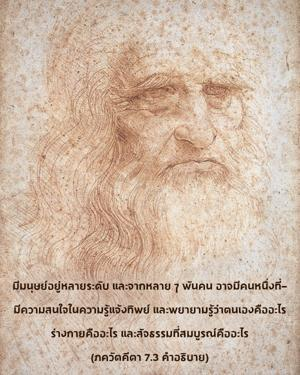

จากหลายๆพันคนอาจมีหนึ่งคนที่พยายามเพื่อความสมบูรณ์ และจากพวกที่บรรลุถึงความสมบูรณ์ ผู้ที่รู้จักข้าตามความเป็นจริงยังหาได้ยาก

มีมนุษย์อยู่หลายระดับและจากหลายๆพันคนอาจมีคนหนึ่งที่มีความสนใจในความรู้แจ้งทิพย์และพยายามรู้ว่าตนเองคืออะไร ร่างกายคืออะไร และสัจธรรมที่สมบูรณ์คืออะไร โดยทั่วไปมนุษย์เพียงแต่ปฏิบัติตามนิสัยสัตว์เดรัจฉาน เช่น การกินนอน ป้องกันตัว และเพศสัมพันธ์ จะหาคนที่สนใจความรู้ทิพย์ได้ยาก หกบทแรกของ คีตา มีไว้สำหรับพวกที่สนใจความรู้ทิพย์ในการเข้าใจตนเอง เข้าใจอภิวิญญาณ และวิธีการเพื่อความรู้แจ้งด้วย ชฺญาน-โยค, ธฺยาน-โยค และรู้ข้อแตกต่างระหว่างตนเองกับวัตถุ อย่างไรก็ดีบุคคลผู้อยู่ในกฺฤษฺณจิตสำนึกเท่านั้นจึงจะสามารถรู้จักองค์กฺฤษฺณ นักทิพย์นิยมอื่นๆอาจบรรลุความรู้แจ้ง พฺรหฺมนฺ อันไร้รูปลักษณ์ซึ่งง่ายกว่าการเข้าใจองค์กฺฤษฺณ องค์กฺฤษฺณทรงเป็นบุคลิกภาพสูงสุดแต่ในขณะเดียวกันพระองค์ก็ทรงอยู่เหนือความรู้แห่ง พฺรหฺมนฺ และ ปรมาตฺมา โยคี และ ชฺญานี สับสนในความพยายามของตนเองที่จะเข้าใจองค์กฺฤษฺณ แม้แต่ ศฺรีปาท ชังคะราชารยะผู้ไม่เชื่อในรูปลักษณ์ที่ยิ่งใหญ่ที่สุดยังยอมรับในคำอธิบาย คีตา ของท่านว่าองค์กฺฤษฺณทรงเป็นบุคลิกภาพสูงสุดแห่งพระเจ้า แต่สาวกของท่านไม่ยอมรับองค์กฺฤษฺณเหมือนกับท่าน เพราะเป็นสิ่งที่ยากมากในการที่จะรู้จักองค์กฺฤษฺณ แม้แต่ผู้ที่รู้แจ้งทิพย์แห่ง พฺรหฺมนฺ อันไร้รูปลักษณ์แล้วก็เช่นกัน
องค์กฺฤษฺณทรงเป็นองค์ภควานฺแหล่งกำเนิดของแหล่งกำเนิดทั้งปวง ทรงเป็น โควินฺท พระผู้เป็นเจ้าองค์แรก อีศฺวรห์ ปรมห์ กฺฤษฺณห์ สจฺ-จิทฺ-อานนฺท-วิคฺรหห์ / อนาทิรฺ อาทิรฺ โควินฺทห์ สรฺว-การณ-การณมฺ เป็นสิ่งยากมากสำหรับพวกที่ไม่ใช่สาวกที่จะรู้จักองค์กฺฤษฺณ ถึงแม้ประกาศว่าวิถีแห่ง ภกฺติ-โยค หรือการอุทิศตนเสียสละรับใช้นั้นง่ายมากแต่พวกเขาไม่สามารถปฏิบัติได้ หากว่าวิถีแห่ง ภกฺติ-โยค ง่ายเหมือนดังเช่นพวกที่ไม่ใช่สาวกอ้างแล้วทำไมจึงไปปฏิบัติตามวิธีที่ยาก อันที่จริงวิถีแห่ง ภกฺติ-โยค ไม่ง่าย ภกฺติ-โยค ปลอมที่บุคคลผู้เชื่อถือไม่ได้ปฏิบัติกันโดยปราศจากความรู้ที่ถูกต้องแห่ง ภกฺติ-โยค อาจจะง่าย แต่เมื่อปฏิบัติกันจริงๆตามกฎระเบียบต่างๆนักวิชาการและนักปราชญ์ผู้คาดคะเนจะตกลงมาจากวิถีทาง ศฺรีล รูป โคสฺวามี ได้เขียนใน ภกฺติ-รสามฺฤต-สินฺธุ ( 1.2.101) ดังนี้
ศฺรุติ-สฺมฺฤติ-ปุราณาทิ-
ปญฺจราตฺร-วิธึ วินา
ไอกานฺติกี หเรรฺ ภกฺติรฺ
อุตฺปาตาไยว กลฺปเต
“การอุทิศตนเสียสละรับใช้แด่องค์ภควานฺ และปฏิเสธวรรณกรรมพระเวทที่เชื่อถือได้เช่น อุปนิษทฺสฺ, ปุราณ และ นารท ปญฺจราตฺร ได้แต่สร้างความเดือดร้อนให้สังคมโดยไม่จำเป็นเท่านั้น”
เป็นไปไม่ได้ที่ผู้รู้แจ้ง พฺรหฺมนฺ อันไร้รูปลักษณ์ หรือ โยคีผู้รู้แจ้ง ปรมาตฺมา จะเข้าใจองค์กฺฤษฺณบุคลิกภาพสูงสุดแห่งพระเจ้าผู้ทรงเป็นโอรสของพระนาง ยโศทา หรือเป็นสารถีของ อรฺชุน แม้แต่เทวดาผู้ยิ่งใหญ่บางครั้งยังสับสนเกี่ยวกับองค์กฺฤษฺณ ( มุหฺยนฺติ ยตฺ สูรยห์) มำ ตุ เวท น กศฺจน องค์ภควานฺตรัสว่า “ไม่มีผู้ใดรู้จักข้าตามความเป็นจริง” และหากว่ามีผู้หนึ่งผู้ใดรู้จักพระองค์ ส มหาตฺมา สุ-ทุรฺลภห์ “ดวงวิญญาณผู้ยิ่งใหญ่เช่นนี้หาได้ยากมาก” ฉะนั้นนอกเสียจากว่าจะปฏิบัติการอุทิศตนเสียสละรับใช้แด่องค์ภควานฺมิฉะนั้นเราก็จะไม่สามารถรู้จักองค์กฺฤษฺณตามความเป็นจริง ( ตตฺตฺวตห์ ) ถึงแม้เราจะเป็นนักวิชาการหรือเป็นนักปราชญ์ผู้ยิ่งใหญ่ สาวกผู้บริสุทธิ์เท่านั้นที่สามารถรู้บางสิ่งบางอย่างเกี่ยวกับคุณสมบัติทิพย์อันมองไม่เห็นในองค์กฺฤษฺณ เห็นพระองค์ทรงเป็นแหล่งกำเนิดของแหล่งกำเนิดทั้งมวล เห็นพระเดชและความมั่งคั่งของพระองค์ ความร่ำรวย ชื่อเสียง พลังอำนาจ ความสง่างาม ความรู้ และความเสียสละของพระองค์ เพราะว่าองค์กฺฤษฺณทรงมีแนวโน้มที่จะให้พระเมตตากรุณาต่อสาวก พระองค์ทรงเป็นคำสุดท้ายในความรู้แจ้ง พฺรหฺมนฺ สาวกเท่านั้นที่สามารถรู้แจ้งตามความเป็นจริงได้กล่าวไว้ว่า
อตห์ ศฺรี-กฺฤษฺณ-นามาทิ
น ภเวทฺ คฺราหฺยมฺ อินฺทฺริไยห์
เสโวนฺมุเข หิ ชิหฺวาเทา
สฺวยมฺ เอว สฺผุรตฺยฺ อทห์
“ไม่มีผู้ใดสามารถเข้าใจองค์กฺฤษฺณตามความเป็นจริงด้วยประสาทสัมผัสวัตถุอันหยาบ แต่พระองค์ทรงเปิดเผยตัวพระองค์แด่สาวก เนื่องจากทรงพอพระทัยกับการรับใช้ด้วยความรักทิพย์ที่มีต่อพระองค์” ( ภกฺติ-รสามฺฤต-สินฺธุ 1.2.234)